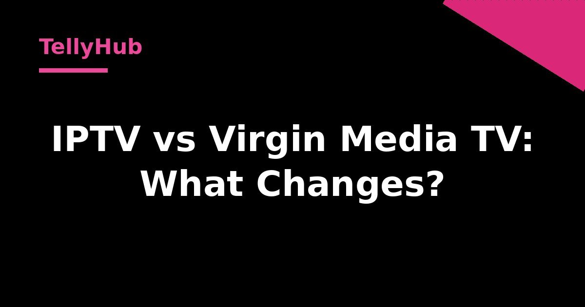

A practical look at contracts, hardware and broadband dependence.
Contract shape
Traditional TV bundles often use longer commitments; IPTV plans may be shorter. Read renewal terms for both before comparing prices.
A twelve-month IPTV plan is still a commitment, but it is not a multi-year bundle. Blaster TV UK plans run from one to twelve months, and the trial lets you test before any of them.
Hardware
Virgin uses provider hardware. IPTV usually relies on your own Smart TV, Firestick or compatible box.
That changes who fixes what. With provider hardware, the provider supplies and replaces the box. With your own device, you keep it updated and you choose the player — which is also why setup guidance matters.
Broadband reliance
Both modern services use broadband, but a standalone IPTV setup makes connection quality especially visible. A Virgin box and an IPTV app both stream, but the IPTV setup leans harder on your own Wi-Fi.
A wired connection, a router in the open, and a realistic speed check go a long way. Test at your busiest viewing time, not at midday.
Choose by household habits
Recordings, landline bundles and multi-room needs can matter as much as the channel list. If your household leans on series-link recordings, check what an IPTV setup offers before switching.
Multi-room works differently too. With IPTV, extra screens usually need to be agreed in advance, so ask before assuming the whole house is covered.
What stays the same
The television, the sofa and the argument about what to watch all stay exactly where they are. What changes is how the picture arrives and who you call when it does not.
The trial exists for this: run it on your real setup, with your real habits, and the comparison answers itself.
Questions about this guide
No. An IPTV subscription works over any suitable broadband connection, from any provider.
Leaving TV does not have to mean leaving broadband or phone. Ask Virgin what your remaining services cost on their own.
The practical switch is simple: try the trial on your device, then choose a plan. The bigger decision is whether the setup suits your household.
Next steps
Check your setup during the 24-hour trial, then ask Blaster TV UK for help with the exact device and app you are using.